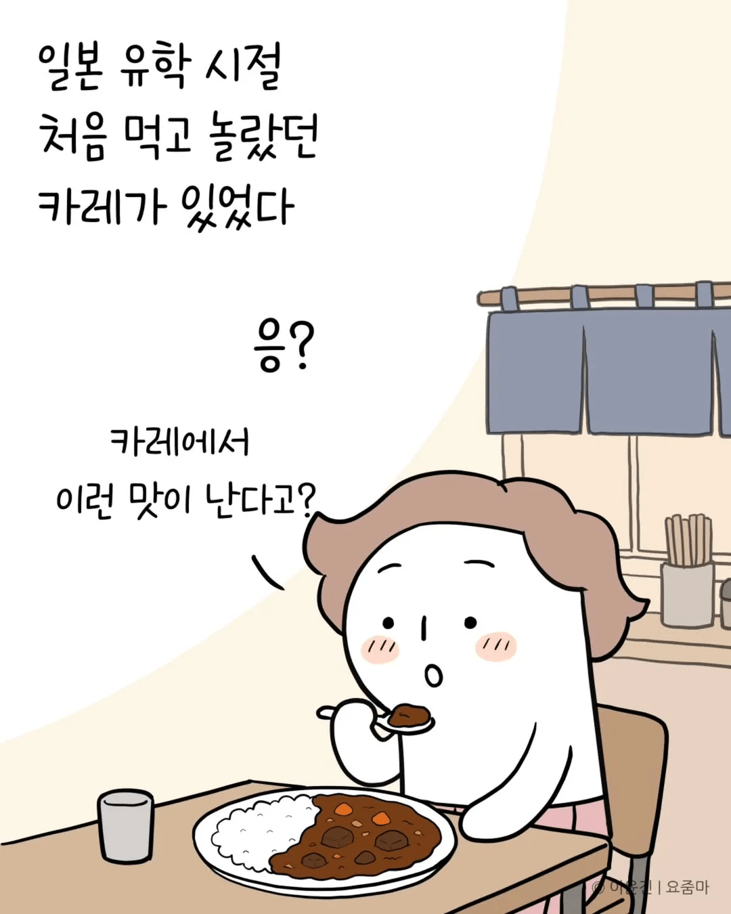
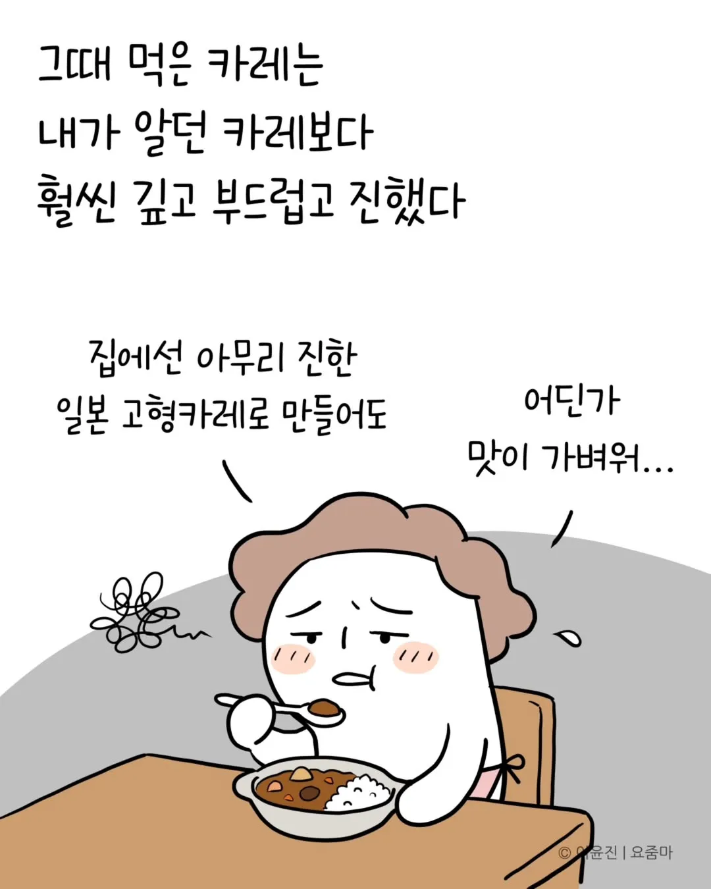
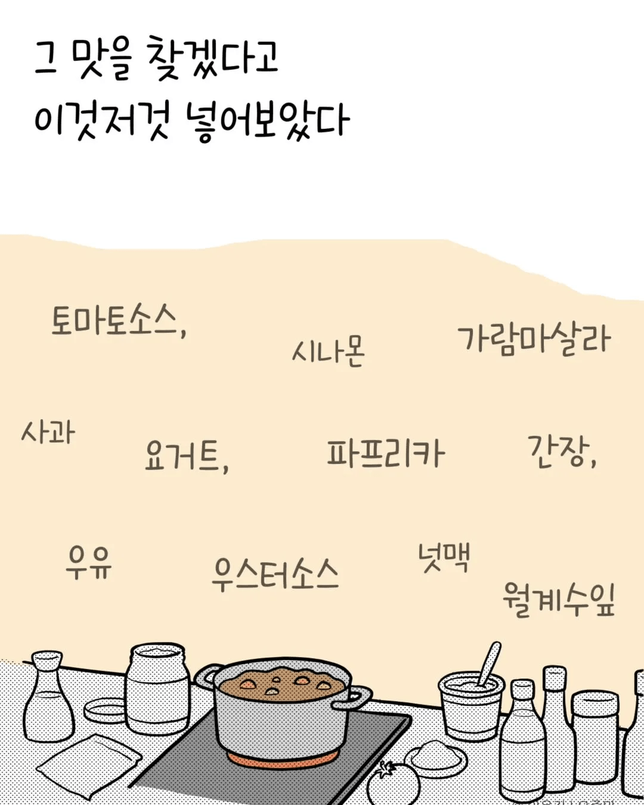
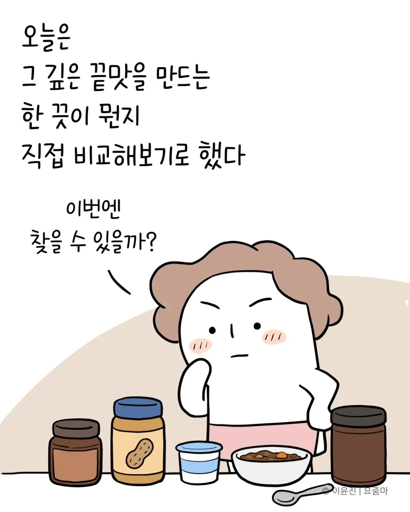
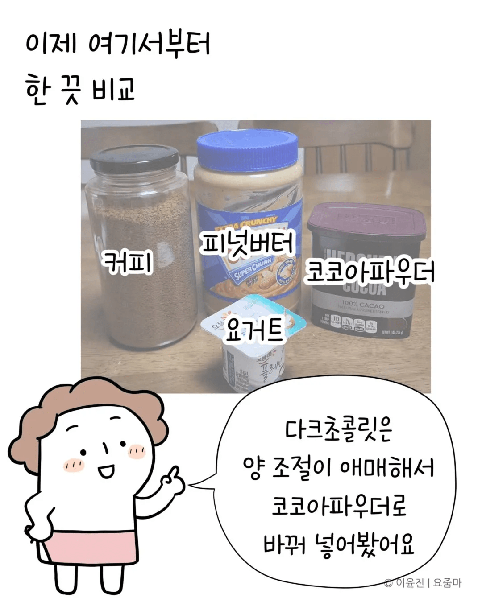
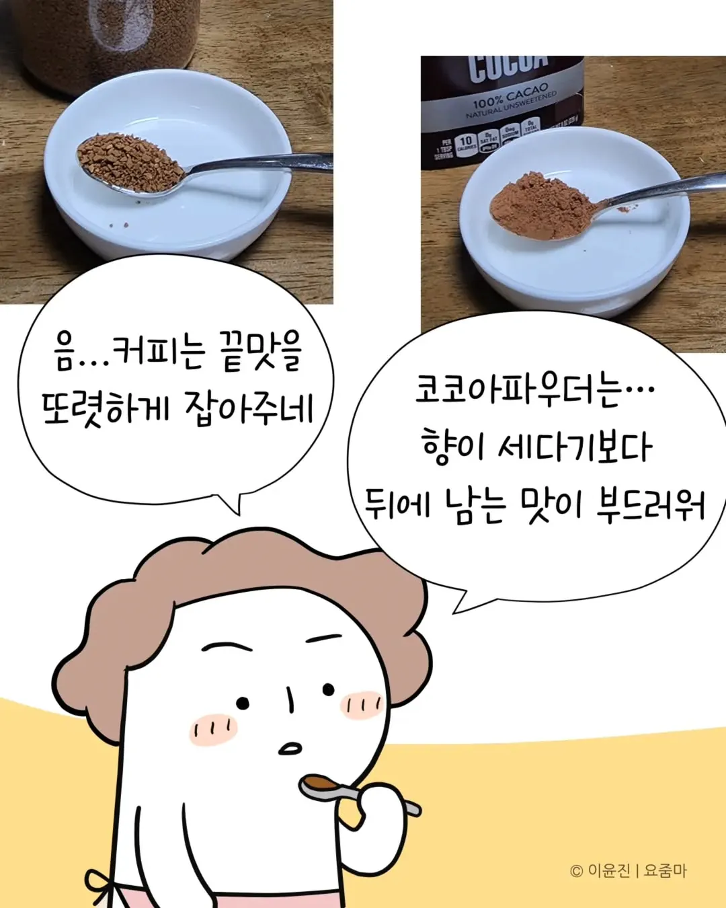
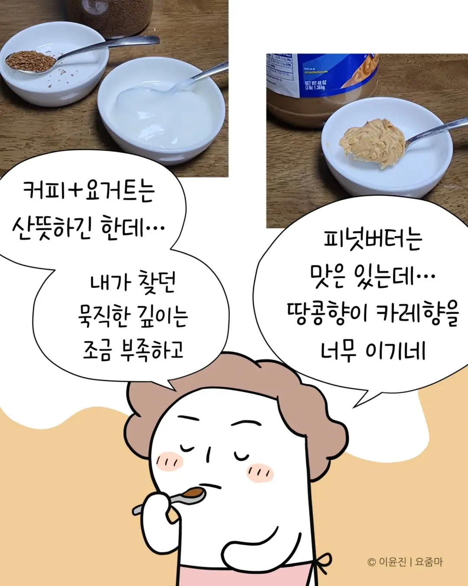
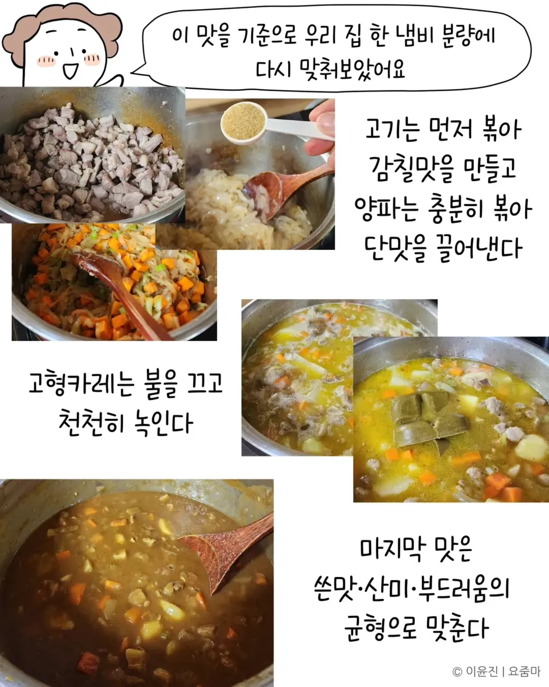
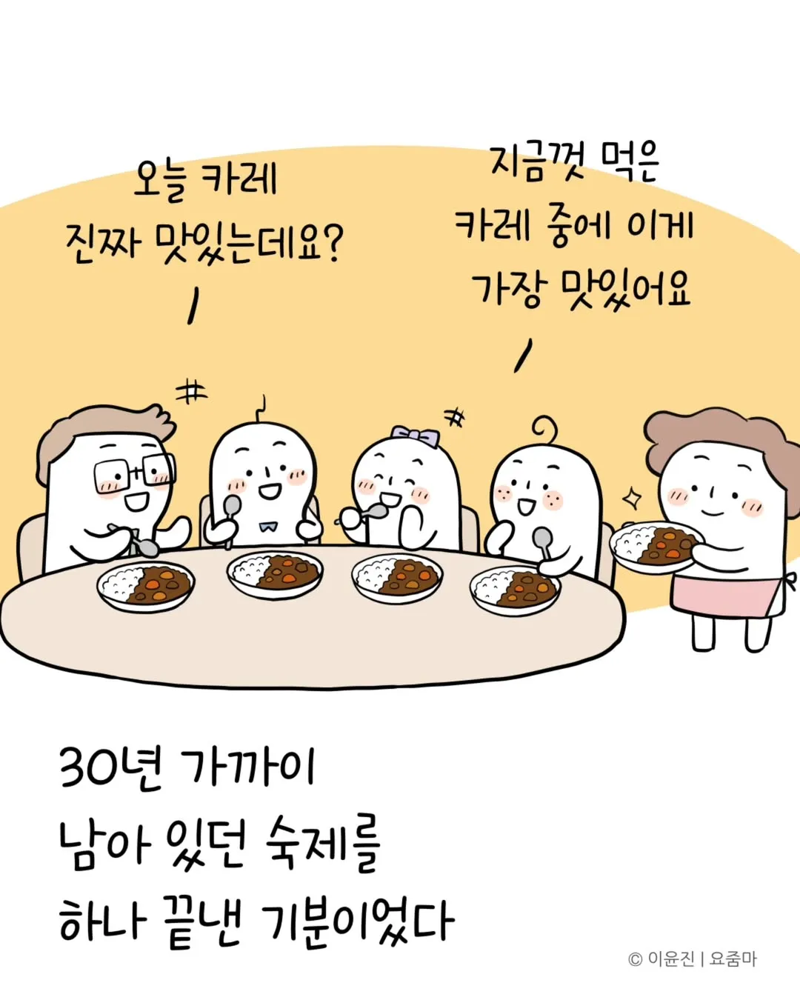
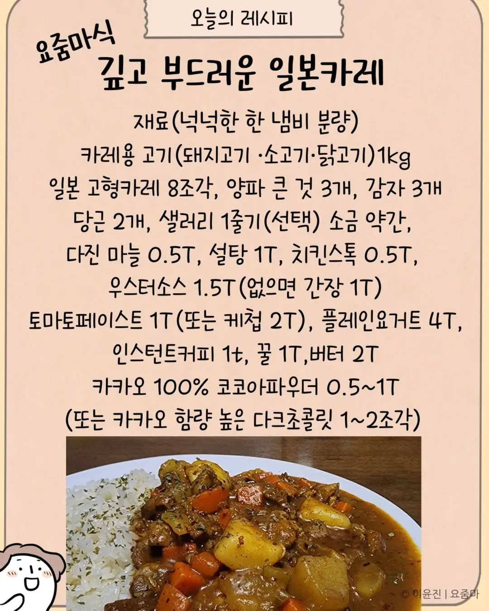
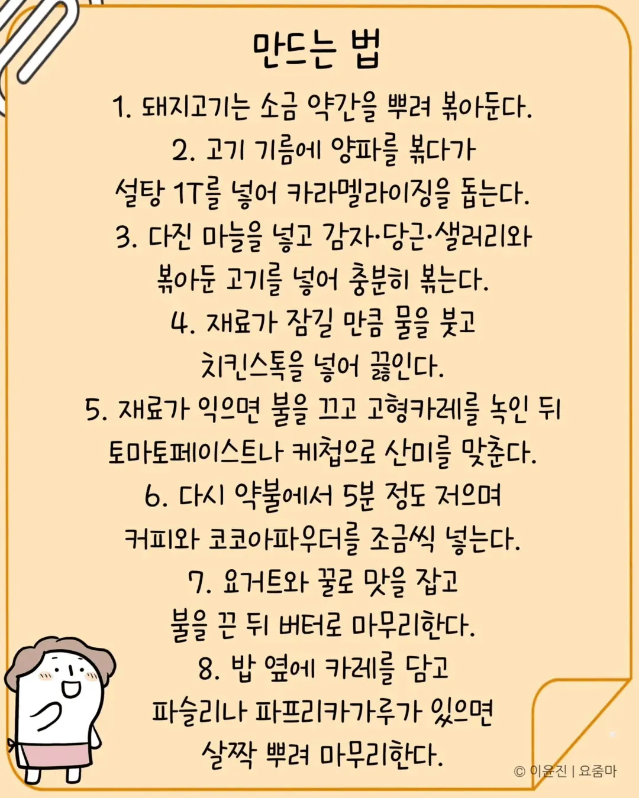











당뇨당뇨해
올라가는건 내려오기만 하면 상관없음.
스프카레ㄱㄱㄱ
아 브로콜리튀김추가해서먹고싶다ㅋㅋ
시중판매 카레는 농도를 잡기 위해 전분을 추가하기 때문에 탄수비율이 높음.

뭔가 좀 달아보이는데 설탕 + 익은양파 + 케첩 + 꿀까지 들어가면
고기가 1kg 인거보면
저정도 넣었다고 달아질 양은 아닌듯함
바디감을 원하면 고구마를 전자렌지에 10분돌려서 으깨서 카레에 투하 ㄱㄱ
오뚜기 매운맛이면 충분함
양파의 구운향을 원하면 냉동마늘 믹서기로 갈던. 걍 냄비투하해서 볶아. 양파보다 쉽고 빨라 카누 카레 마지막에 투하 ㄱㄱ. 그럼 저거 90퍼 비슷하게 나옴
일마이거맛잘알이네
마늘 볶은 냄비에 3분카레 넣고 고구마 으깨서 넣은다음 카누 넣어도됨?
ㅇㅇ. 카누가 마지막임. 이게 중요.
양파 오지게 넣고 볶으면 뒤지게 맛있긴 해
요즘 카레괴인 보는데 진짜 카레하나 제대로 만들려면 씹정성이더라
탐구정신이 대단하시네
게임에서 배운 것 중에 여지껏 제일 유용하게 쓴게 커피랑 카레가 잘 어울린다는 지식 아닐까 싶다
아니 커피 요거트까지 들어가?
여기서 끝이 아니다??
일일외출록 반장의 개 레전드편을 아직 안본것이냐
왓이즈댓
아 맛있겠다 ㅋㅋㅋ 남이해준 정성스런 카레 너무좋은데
ㅇㄷ
간단하고 저점 높게 먹을거면 그냥 라드좀 넉넉하게 넣고 고기볶다가 고형카레도 기름에 그냥 볶고
그 후에 물넣고 간은 쯔유랑 액젓 좀 넣고 모자라면 소금
카레는 짠맛이 강할수록 깊은맛도 같이 강해짐 라드 많이 들어가는 이유가 짠맛을 좀 중화시켜줌
와 다 알려줬는데도 못하겠다ㄷ
어렵진 않은데 그렇다고 쉽지도 않은 애매한 난이도네. 언제고 해 볼 듯.
요리 좀 관심있으면 이 분 인스타가 도움 많이됨
해줘
요거트 커피 초콜릿 없어서 ㅈㅈ
연구추
카레 레시피 와드
대단하다 쉽지 않을텐데
이 분 진짜 혀에 뭔가 있음. ㅋㅋ
누가 소스 카피해달라면
먹어보고 맛의 이미지를 카피해서 비슷하게 만들더라.
위에꺼 따라하기힘들면
양파 8~10개정도 얇게썰어서
갈색될때까지 버터넣고 볶은다음
골든커리 고형한팩
8조각 다넣고
거기에 치킨스톡이랑 굴소스 케첩만 넣어도 존나맛있음....
이건 양파썰고 볶는거만 할수있음
만들기 쉬움
업장에선 단순하게
걍 생크림과 쵸콜릿
양파 볶는 카라멜라이징 조리법은 북인도와 중동식카레임
모 아재가 방송에서 중동갔다온뒤.카이막과 같애 공개한게 유툽에 퍼진걸 기억함.성시경이 후속타로 더 널리퍼짐
맛있어서 유행하긴하는데
장사하는 사람 입장에서 탄내나 지저분해질 양파볶기보단 걍 생크림풀고 너무 달면 커피가루
산미 추가는 토마토임
코코넛밀크는 비싸
1시간 양파볶아봐야
좀 맵게 만든 카레에 생크림 짜는게
더 색도 풍미도 맛오 살아나 팔기좋음
여유좀 있음 큐민가루나 토마토퓨레 코코넛밀크 써보셈
그 레시피를 공유해 주시다니 감동이구나,,
그냥 치킨스톡이나 굴소스 넣음 안 되?
카레 ㅇㄷ
킹왕짱 카레 ㅇㄷ
이 분 인스타 구독 중인데 진짜 실험정신이 엄청나심... 뭐 하나 꽂히시면 일주일 내내 그것만 만들어 ㅋㅋㅋ
난 못하겠다
카레도 혈당 확 올린대서 참고있었는데
카레마렵게하네ㅋㅋ